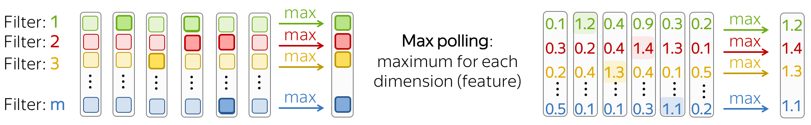

Convolutional Neural Networks for Text
This is the Convolutional Models Supplementary.
It contains a
detailed description of convolutional models in general, as well as particular
model configurations for specific tasks.
Most of the content is copied from the corresponding parts of the main course: I gathered them here
for convenience.
The news parts here are
Parameters: Kernel size, Stride, Padding, Bias and
k-max pooling.
Convolutions for Images and Translation Invariance
Convolutional networks were originally developed for computer vision tasks. Therefore, let's first understand the intuition behind convolutional models for images.
Imagine we want to classify an image into several classes, e.g. cat, dog, airplane, etc. In this case, if you find a cat on an image, you don't care where on the image this cat is: you care only that it is there somewhere.
Convolutional networks apply the same operation to small parts of an image: this is how they extract features. Each operation is looking for a match with a pattern, and a network learns which patterns are useful. With a lot of layers, the learned patterns become and more complicated: from lines in the early layers to very complicated patterns (e.g., the whole cat or dog) on the upper ones. You can look at the examples in the Analysis and Interpretability section.
This property is called translation invariance: translation because we are talking about shifts in space, invariance because we want it to not matter.
The illustration is adapted from the one taken from
this cool repo.
Convolutions for Text
Well, for images it's all clear: e.g. we want to be able to move a cat because we don't care where the cat is. But what about texts? At first glance, this is not so straightforward: we can not move phrases easily - the meaning will change or we will get something that does not make much sense.
However, there are some applications where we can think of the same intuition. Let's imagine that we want to classify texts, but not cats/dogs as in images, but positive/negative sentiment. Then there are some words and phrases which could be very informative "clues" (e.g. it's been great, bored to death, absolutely amazing, the best ever, etc), and others which are not important at all. We don't care much where in a text we saw bored to death to understand the sentiment, right?
A Typical Model: Convolution+Pooling Blocks
Following the intuition above, we want to detect some patterns, but we don't care much where exactly these patterns are. This behavior is implemented with two layers:
- convolution: finds matches with patterns (as the cat head we saw above);
- pooling: aggregates these matches over positions (either locally or globally).
A typical convolutional model for texts is shown on the figure. Usually, a convolutional layer is applied to word embedding, which is followed by a non-linearity (usually ReLU) and a pooling operation. These are the main building blocks of convolutional models: for specific tasks, the configurations can be different, but these blocks are standard.

In the following, we discuss in detail the main building blocks, convolution and pooling, then consider modeling modifications.
Note that modeling modifications for specific tasks are described in the corresponding lectures of the main part of the course. We repeat applications for specific tasks here just for convenience.
Building Blocks: Convolution
Convolutions in computer vision go over an image with a sliding window and apply the same operation, convolution filter, to each window. A convolution layer usually has several filters, and each filter detects a different pattern (more on this below).
The illustration (taken from this cool repo) shows this process for one filter: the bottom is the input image, the top is the filter output. Since an image has two dimensions (width and height), the convolution is two-dimensional.

Convolution filter for images. The illustration is from
this cool repo.
Differently from images, texts have only one dimension. Therefore, a convolution here is one-dimensional: look at the illustration.
Convolution filter for text.
Convolution is a Linear Operation Applied to Each Window

A convolution is a linear layer (followed by a non-linearity) which is applied to each input window. Formally, let us assume that
- \((x_1, \dots, x_n)\) - representations of the input words, \(x_i\in \mathbb{R}^d\);
- \(d\) (input channels) - size of an input embedding;
- \(k\) (kernel size) - the length of a convolution window (on the illustration, \(k=3\));
- \(m\) (output channels) - number of convolution filters (i.e., number of channels produced by the convolution).
Then a convolution is a linear layer \(W\in\mathbb{R}^{(k\cdot d)\times m}\). For a \(k\)-sized window \((x_i, \dots x_{i+k-1})\), the convolution takes the concatenation of these vectors \[u_i = [x_i, \dots x_{i+k-1}]\in\mathbb{R}^{k\cdot d}\] and multiplies by the convolution matrix: \[F_i = u_i \times W.\] A convolution goes over an input with a sliding window and applies the same linear transformation to each window.
Parameters: Kernel size, Stride, Padding, Bias
• Kernel size: How far to look
Kernel size is the number of input elements (tokens) a convolution looks at each step. For text, typical values are 2-5.

• Stride: How much move a filter at each step
Stride tells how much to move filter at each step. For example, stride equal to 1 means that we move the filter by 1 input element (pixel for images, token for texts) at each step.

• Padding: Add zero vectors to both sides
Padding adds zero vectors to both sides of an input. If you are using stride>1, you may need padding - be careful!

• Bias: The bias term in the linear operation in convolution.
By default, there's no bias - only multiplication by a matrix.

Intuition: Each Filter Extracts a Feature
Intuitively, each filter in a convolution extracts a feature.

• One filter - one feature extractor
A filter takes vector representations in a current window and transforms them linearly into a single feature. Formally, for a window \(u_i = [x_i, \dots x_{i+k-1}]\in\mathbb{R}^{k\cdot d}\) a filter \(f\in\mathbb{R}^{k\cdot d}\) computes dot product: \[F_i^{(f)} = (f, u_i).\] The number \(F_i^{(f)}\) (the extracted "feature") is a result of applying the filter \(f\) to the window \((x_i, \dots x_{i+k-1})\).
• m filters: m feature extractors

One filter extracts a single feature. Usually, we want many features: for this, we have to take several filters. Each filter reads an input text and extracts a different feature - look at the illustration. The number of filters is the number of output features you want to get. With \(m\) filters instead of one, the size of the convolutional layer we discussed above will become \((k\cdot d)\times m\).

This is done in parallel! Note that while I show you how a CNN "reads" a text, in practice these computations are done in parallel.
Building Blocks: Pooling
After a convolution extracted \(m\) features from each window, a pooling layer summarises the features in some region. Pooling layers are used to reduce the input dimension, and, therefore, to reduce the number of parameters used by the network.
Max and Mean Pooling
The most popular is max-pooling: it takes maximum over each dimension, i.e. takes the maximum value of each feature.
Intuitively, each feature "fires" when it sees some pattern: a visual pattern in an image (line, texture, a cat's paw, etc) or a text pattern (e.g., a phrase). After a pooling operation, we have a vector saying which of these patterns occurred in the input.
Mean-pooling works similarly but computes mean over each feature instead of maximum.
k-max Pooling

k-max pooling is a generalization of max-pooling. Instead of finding one maximum feature, it selects k features with the highest values. The order of these features is preserved.
It can be useful if it is important how many times a network found some pattern.
Pooling and Global Pooling
Similarly to convolution, pooling is applied to windows of several elements. Pooling also has the stride parameter, and the most common approach is to use pooling with non-overlapping windows. For this, you have to set the stride parameter the same as the pool size. Look at the illustration.

The difference between pooling and global pooling is that pooling is applied over features in each window independently, while global pooling performs over the whole input. For texts, global pooling is often used to get a single vector representing the whole text; such global pooling is called max-over-time pooling, where the "time" axis goes from the first input token to the last.

Intuitively, each feature "fires" when it sees some pattern: a visual pattern in an image (line, texture, a cat's paw, etc) or a text pattern (e.g., a phrase). After a pooling operation, we have a vector saying which of these patterns occurred in the input.
For more details on intuition and examples of patterns, look at the Analysis and Interpretability section.
Building Blocks: Residual Connections
TL;DR: Train Deep Networks Easily!
To process longer contexts you need a lot of layers. Unfortunately, when stacking a lot of layers, you can have a problem with propagating gradients from top to bottom through a deep network. To avoid this, we can use residual connections or a more complicated variant highway connections.

Residual connections are very simple: they add input of a block to its output. In this way, the gradients over inputs will flow not only indirectly through the block, but also directly through the sum.
Highway connections have the same motivation, but a use a gated sum of input and output instead of the simple sum. This is similar to LSTM gates where a network can learn the types of information it may want to carry on from bottom to top (or, in case of LSTMs, from left to right).
Look at the example of a convolutional network with residual connections. Typically, we put residual connections around blocks with several layers. A network can several such blocks - depending on your task, you may need a lot of layers to get a decent receptive field.

Specific Tasks: Text Classification
This part is a summary of the convolutional models part of the Text Classification lecture in the main part of the course. For a detailed description of the text classification task, go to the main lecture.
Now, when we understand how the convolution and pooling work, let's come to modeling modifications. In the case of text classification:
We need a model that can produce a fixed-sized vector for inputs of different lengths.
Therefore, we need to construct a convolutional model that represents a text as a single vector.
The basic convolutional model for text classification is shown on the figure. Note that, after the convolution, we use global-over-time pooling. This is the key operation: it allows to compress a text into a single vector. The model itself can be different, but at some point, it has to use the global pooling to compress input in a single vector.

• Several Convolutions with Different Kernel Sizes
Instead of picking one kernel size for your convolution, you can use several convolutions with different kernel sizes. The recipe is simple: apply each convolution to the data, add non-linearity and global pooling after each of them, then concatenate the results (on the illustration, non-linearity is omitted for simplicity). This is how you get vector representation of the data which is used for classification.

This idea was used, among others, in the paper Convolutional Neural Networks for Sentence Classification and many follow-ups.
• Stack Several Blocks Convolution+Pooling
Instead of one layer, you can stack several blocks convolution+pooling on top of each other. After several blocks, you can apply another convolution, but with global pooling this time. Remember: you have to get a single fixed-sized vector - for this, you need global pooling.
Such multi-layered convolutions can be useful when your texts are very long; for example, if your model is character-level (as opposed to word-level).

This idea was used, among others, in the paper Character-level Convolutional Networks for Text Classification.
Specific Tasks: Language Modeling
This part is a summary of the convolutional models part of the Language Modeling lecture in the main part of the course. For a detailed description of the language modeling task, go to the main lecture.
Compared to CNNs for text classification, language models have several differences. Here we discuss general design principles of CNN language models; for a detailed description of specific architectures, you can look in the Related Papers section in the Language Modeling lecture.

When designing a CNN language model, you have to keep in mind the following things:
- prevent information flow from future tokens
To predict a token, a left-to-right LM has to use only previous tokens - make sure your CNN does not see anything but them! For example, you can shift tokens to the right by using padding - look at the illustration above. - do not remove positional information
Differently from text classification, positional information is very important for language models. Therefore, do not use pooling (or be very careful in how you do it). - if you stack many layers, do not forget about residual connections
If you stack many layers, it may difficult to train a very deep network well. To avoid this, use residual connections - look for the details below.
Receptive field: with many layers, can be large

When using convolutional models without global pooling, your model will inevitably have a fixed-sized context. This might seem undesirable: the fixed context size problem is exactly what we didn't like in the n-gram models!
However, if for n-gram models typical context size is 1-4, contexts in convolutional models can be quite long. Look at the illustration: with only 3 convolutional layers with small kernel size 3, a network has a context of 7 tokens. If you stack many layers, you can get a very large context length.
Residual Connections: with many layers, you will need them!
If you stack many layers, you may have troubles with training a deep network. Luckily, for this you can use residual connections!
Look at the example of a convolutional network with residual connections. Typically, we put residual connections around blocks with several layers. A network can several such blocks - remember, you need a lot of layers to get a decent receptive field.

Analysis and Interpretability
What do Convolutions Learn? Analyzing Convolutional Filters
Convolutions in Computer Vision: Visual Patterns
Convolutions were originally developed for images, and there's already a pretty good understanding of what the filters capture and how filters from different layers from a hierarchy. While lower layers capture simple visual patterns such as lines or circles, final layers can capture the whole pictures, animals, people, etc.

Examples of patterns captured by convolution filters for images.
The examples are from
Activation Atlas from distill.pub.
Convolutions for Text Classification
This part is from the Text Classification lecture from the main part of the course.
For images, filters capture local visual patterns which are important for classification. For text, such local patterns are word n-grams. The main findings on how CNNs work for texts are:
- convolving filters are used as ngram detectors
Each filter specializes in one or several families of closely-related ngrams. Filters are not homogeneous, i.e. a single filter can, and often does, detect multiple distinctly different families of ngrams. - max-pooling induces a thresholding behavior
Values below a given threshold are ignored when (i.e. irrelevant to) making a prediction. For example, this paper shows that 40% of the pooled ngrams on average can be dropped with no loss of performance.

The simplest way to understand what a network captures is to look which patterns activate its neurons. For convolutions, we pick a filter and find those n-grams which activate this filter most.
Below are examples of the top-1 n-gram for several filters. For one of them, we also show other n-grams which lead to high activation of this filter - you can see that the n-grams have a very similar meaning.

For more details, look at the paper Understanding Convolutional Neural Networks for Text Classification.
Convolutions for Language Modeling
This part is from the Research Thinking section of the Language Modeling lecture from the main part of the course.
Let's look at the examples from the EMNLP 2016 paper Convolutional Neural Network Language Models. For a simple convolutional LM, the authors feed the development data to a model and find ngrams that activate a certain filter most.

While a model for sentiment classification learned to pick things which are related to sentiment, the LM model captures phrases which can be continued similarly. For example, one kernel activates on phrases ending with a month, another - with a name; note also the "comparative" kernel firing at as ... as.